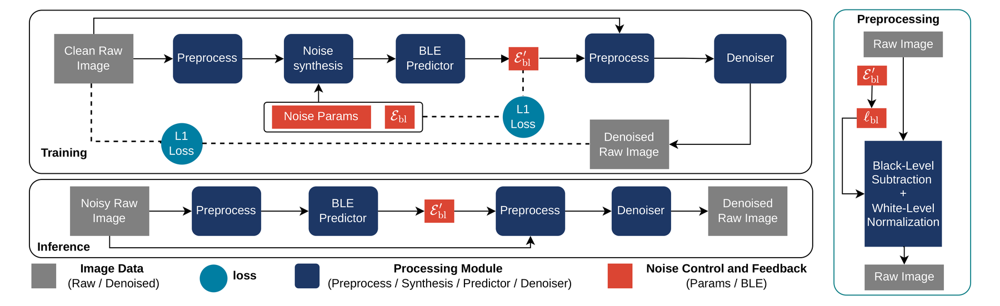

SIDD builds its "clean" ground truth by averaging many noisy frames — but a subtle mistake in the order of operations bakes a systematic color shift (a purple tint) into that ground truth. We diagnose it and release SIDD-CC, a corrected version.
Drag the divider — the left side is SIDD (purple tint), the right side is SIDD-CC (corrected).
In a raw frame, a dark pixel's noise may dip below the sensor's black level. SIDD subtracts the black level and clips every frame before averaging — clipping discards those sub-zero values, so the average is pulled upward. This mean shift shows up as a color cast after rendering by ISP. Averaging first, then clipping, preserves the true mean.
The same problem returns at inference: the black level a camera reports in its metadata may be inaccurate. This black-level error violates the zero-mean assumption underlying Raw noise modeling, and a denoiser trained under that assumption bakes a color shift into its output. We model the black-level error explicitly, but a new noise model alone is not enough to solve this problem. Black-level error is a global distortion of the image, so the model used for denoising must be able to extract this distortion — and commonly used U-Net architectures, with their local receptive field, cannot capture global information. We therefore insert a U-Net encoder prior to denoising: a first model to estimate the black-level error from a global view of the noisy input, and a second model to denoise the noisy image using the corrected black level. An auxiliary loss supervises the estimate end-to-end, so the correction is learned rather than assumed.
